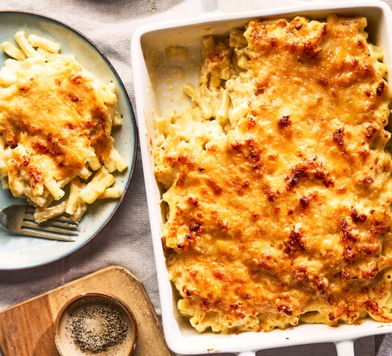

Pasta cheese casserole

For 3-4 people
Ingredience
- Pasta 500 g
- Gruyere 350 g
- Cheddar 350 g
- Milk 1 dl
- Butter 100 g
- Flour 3 EL
- Breadcrumbs
Steps
- Rasp cheese
- Make pasta
- Heat up butter in a pan, if its liquid add fleur and add gulp per gulp milk, wait for 3 min
- Add 1/2 cheese and stir, add spices
- Add pasta stir and put mass in oven dish
- Add Breadcrumbs and of the cheese on top
- Put it in oven for 30 min at 180 °C convection air
- Finito